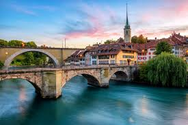

 Bern is the de facto capital of Switzerland, referred to by the Swiss as their "federal city", in German Bundesstadt, and Italian citta federale. With a population of about 140,000 (as of 2019), Bern is the fifth-most populous city in Switzerland. The Bern agglomeration, which includes 36 municipalities, had a population of 406,900 in 2014. The metropolitan area had a population of 660,000 in 2000. Bern is also the capital of the canton of Bern, the second-most populous of Switzerland's cantons. The official language in Bern is (the Swiss variety of Standard) German, but the most-spoken language is an Alemannic Swiss German dialect, Bernese German. In 1983, the historic old town (in German: Altstadt) in the centre of Bern became a UNESCO World Heritage Site. The etymology of the name "Bern" is uncertain. According to the local legend, based on folk etymology, Berchtold V, Duke of Zahringen, the founder of the city of Bern, vowed to name the city after the first animal he met on the hunt, and this turned out to be a bear. It has long been considered likely that the city was named after the Italian city of Verona, which at the time was known as Bern in Middle High German.
Switzerland Page